西街
平凡的一个小镇上有着不平凡的景观。西街给我的色彩感觉是丰富的，
其中以暖色尤为令我喜欢。因此也在本辑中重点赋予这种西街特有的暖色调子。
第 1 幅
西街的清晨，早有游人在品尝着小资情调的早餐。
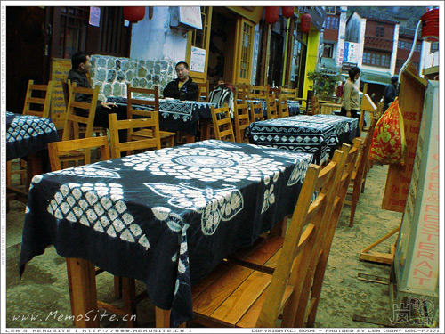
第 2 幅
经过一晚灯谜酒醉的狂欢，早上的西街显得格外的宁静。
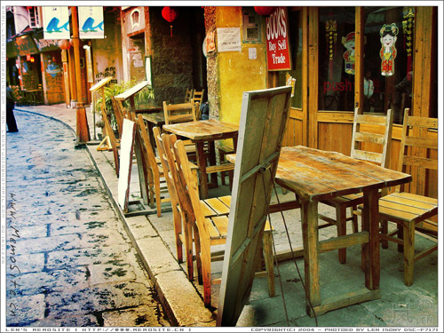
第 3 幅
正如灯笼上所描述，这里作为快乐天堂真是当之无愧。
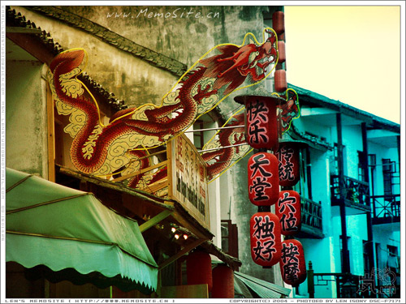
第 4 幅
“没有饭店”的特色墙画
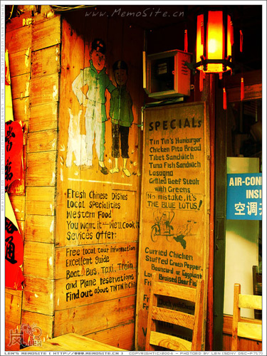
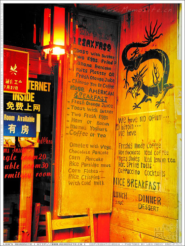
第 6 幅
“月亮下”酒吧的狂欢道，这里相信是晚上西街最狂欢的一条小巷了。
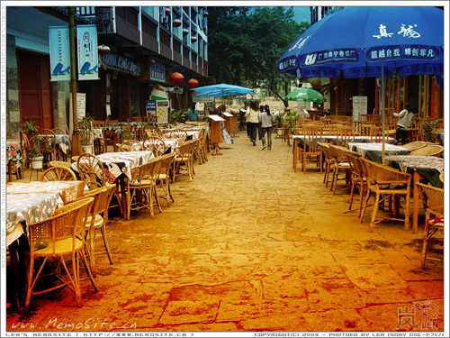
第 7 幅
最喜欢这张的感觉，好像电影中表现的那种西欧的feel。
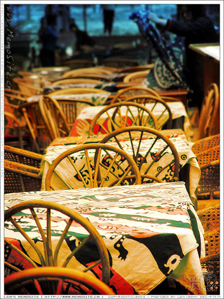
第 8 幅
天色渐晴，西街上的游人都开始整装待发了。
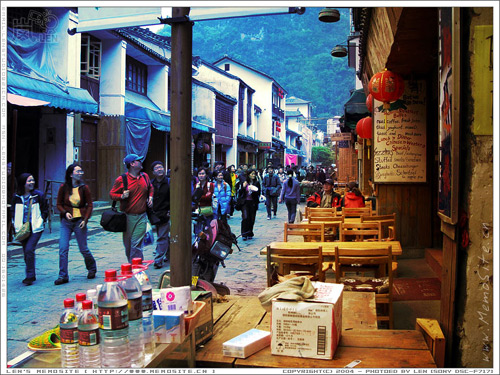
第 9 幅
恬静的西街相信在沐浴完阳光就开始迎接新一轮的狂欢。
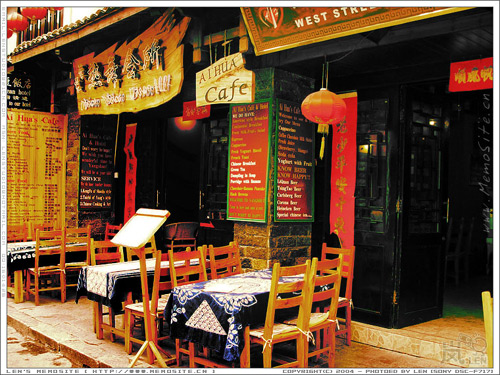
第 10 幅
入夜，游人汇聚西街，分享一天中的收获。笑声、碰杯声、欢呼声，声声入耳！
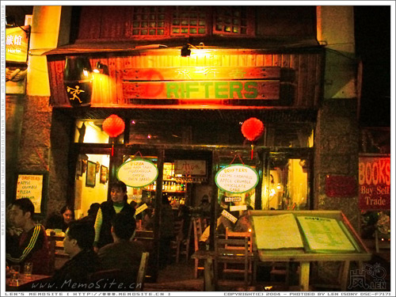
第 11 幅
中西合壁的西街有着她特有的风味，连窗外的修饰也不例外。
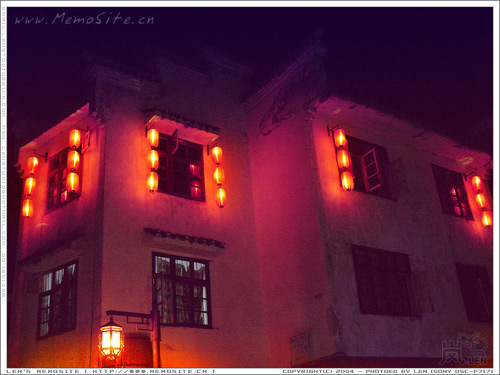
第 12 幅
除了狂欢，这里还有特产。保存西街的欢乐的特产～～
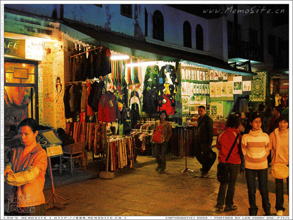